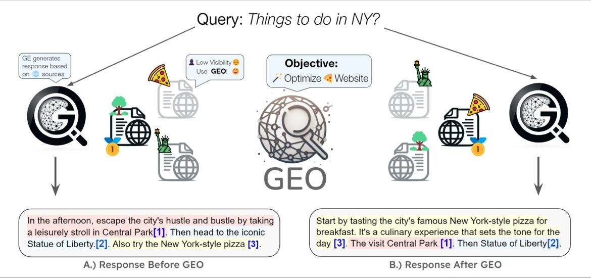

Generative Engine Optimization (GEO):
How many of you use Gen AI for search? In the ever-evolving landscape of search technology, a new player has entered the arena - Generative Engine Optimization (GEO). As we slowly bid farewell to traditional search engines, GEO stands at the forefront, revolutionizing how we interact with information online.
This paradigm shift not only enhances user utility but also presents a unique challenge for content creators - maintaining visibility in a generative search engine world. With GEO, creators can now increase their content’s visibility by up to 40% in generative engine responses.
How it all came to be?
The inception of GEO can be traced back to the rise of large language models (LLMs) and their application in search technologies. These AI-driven systems, known as Generative Engines (GEs), have begun to replace traditional search engines by synthesizing information from multiple sources to generate accurate and personalized responses. The ability of GEs to understand and process content in a nuanced manner has necessitated a new approach to content optimization, leading to the development of GEO.
Here is a simple breakdown of the evolution
All the advances in AI are rooted in the same fundamental principle: the ability to create new and exciting ways of understanding. In search, it took a similar approach.
- 🏁Traditional SEO:
- This is about optimizing content to rank higher on search engine results pages. It involves using keywords, meta tags, backlinks, and other strategies to attract more organic traffic.
- 🏁Search Generative Experience (SGE):
- This enhances the search experience by using AI to provide more relevant and contextual responses. It’s about making search more efficient and user-friendly.
- 🏁Generative Engine Optimization (GEO):
- GEO combines traditional SEO techniques with an understanding of how AI models process content. It’s about ensuring your content is discovered and favorably ranked by AI-enhanced search engines.
Looking ahead
The future of search is generative which already arrived – time for businesses & individuals to adapt. The ability to adapt to this new paradigm will be essential for maintaining relevance and competitiveness in a generative search engine world. Content creators will need to understand the intricacies of GEO to ensure their content resonates with both AI models and human audiences. The future of search is not just about being found—it’s about being understood and valued in an increasingly AI-integrated world.